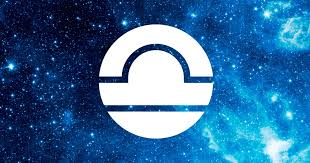

Classement : septième signe astrologique
Dates : correspond aux personnes qui sont nés du 23 septembre au 22 octobre
Elément : l'air
Couleur : le bleu ciel
Pierre précieuse : la citrine
Astre dominant : Vénus
Qualités : sage, civilisé, médiateur, positif et gentil
Défauts : influençable, indécis, manque de confiance en soi, a du mal à tenir ses engagements et vit dans le regards des autres
Signe complémentaire et oppposé : le Bélier 